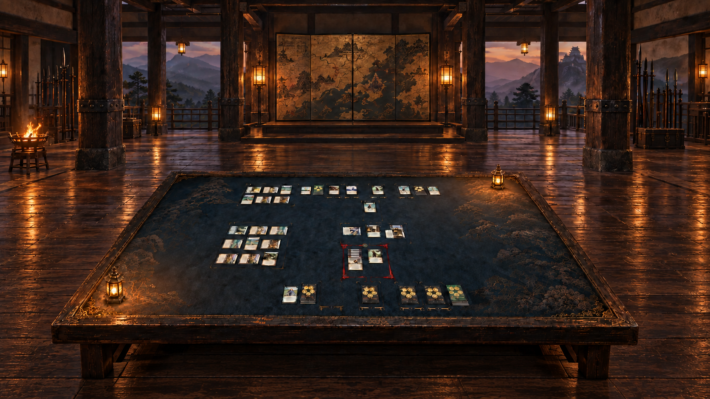
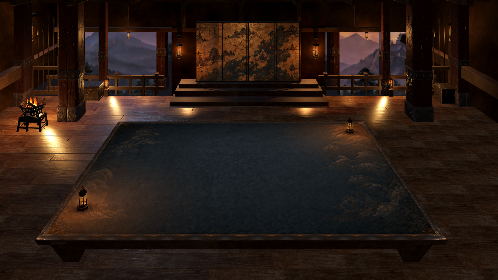
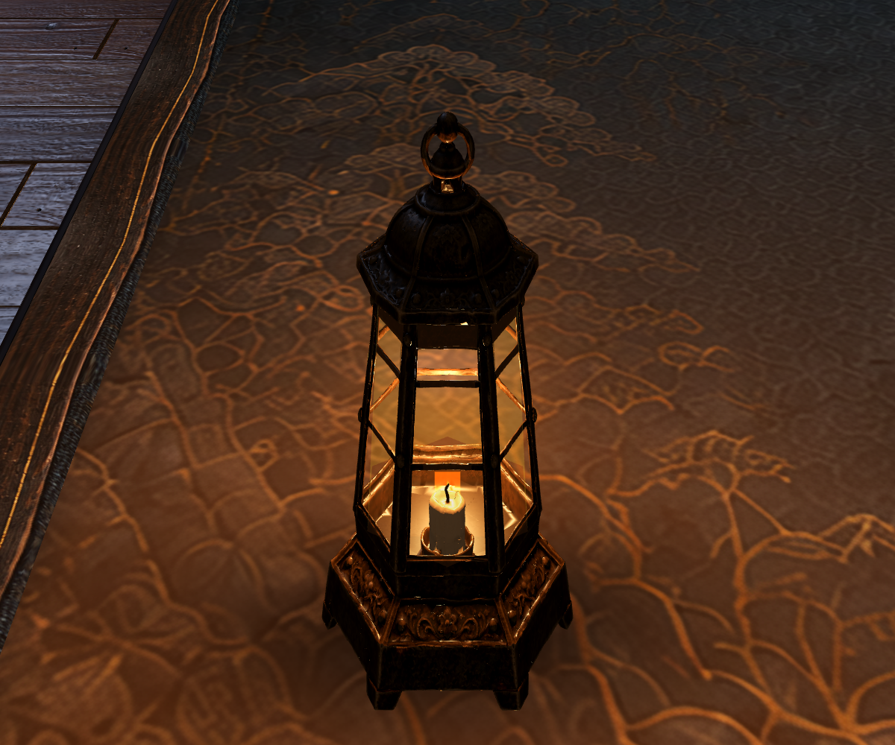
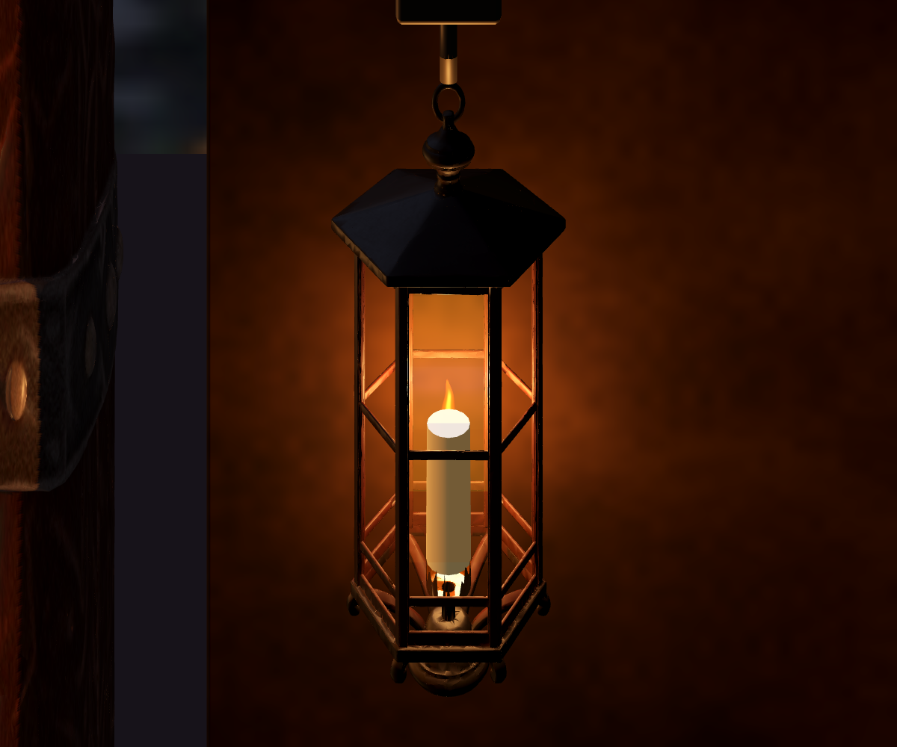

Approved source · 1672 × 941 · unchanged
Native Godot room composition · static Meshy fixtures and lighting · not a claimed pixel-identical reconstructionPreserved: open mountain bays, map screen and empty dais, sparse perimeter inventory, low table, navy/gold mat and original frame. New room animation is deferred. Material finish, distant vista detail and the precise light distribution remain visual review items.
Separate Meshy assets, inspected in the native renderer

Table lantern · high-resolution approved artwork → Meshy → Blender cleanup → Godot. Source · Receipt
Room lantern · exact B3 fixture crop → Meshy → Blender cleanup → Godot. Generated electric bulb removed; candle and amber panes assembled separately. Source crop · ReceiptThis review distinguishes a working native implementation from final artistic acceptance. The room uses actual geometry and five separate Meshy assets: two lantern types, aged column, chest and brazier. The source image is not a full-screen background. It preserves the fixed-pitch game camera; arbitrary free orbit and room animation are separate work.